승강기기사 (2007-09-02 기출문제)
1과목: 승강기 개론
1. 카 내에는 정전시 램프중심부로부터 2m 떨어진 수직면상에서 측정하여 몇 [Lux] 이상의 조도를 확보할 수 있는 예비 조명장치를 설치하여야 하는가?(관련 규정 개정전 문제로 여기서는 기존 정답인 1번을 누르면 정답 처리됩니다. 자세한 내용은 해설을 참고하세요.)
- 1
- 2
- 3
- 4
(정답률: 57%)

2. 카가 갖추어야 할 구조에 대한 설명으로 옳지 않은 것은?
- 구조상 경미한 부분을 제외하고는 불연 재료로 제작 할 것
- 각부는 카내의 사람 또는 물건에 의한 충격에 대하여 안전한 구조로 할 것
- 비상시 카내의 사람을 안전하게 구출하기 위하여 카 후부에 개구부를 설치할 것
- 카내의 사람 또는 물건이 승강로벽 등 카 이외의 물건에 접촉되지 않는 구조로 할 것
(정답률: 59%)
3. 비상용승상기의 주된 사용 목적은?
- 방범용으로 사용
- 예비용으로 사용
- 화재 시 소화 및 구출용
- 대형화물 운반용
(정답률: 68%)
4. 권상식 엘리베이터의 권상용 와이어로프는 최소 몇 본이상인가?
- 3본
- 4본
- 5본
- 6본
(정답률: 71%)
5. 엘리베이터 권상용 전동기의 제어에서 4상유도 전동기의 입력 전압과 주파수를 동시에 제어(인버터 제어) 하는 방식은?
- 교류 2단 속도제어방식
- 교류궤한제어방식
- VVVF 제어방식
- 워드레오나드방식
(정답률: 67%)
6. 로프식 엘리베이터에 비교할 때 유압식 엘리베이터의 특징이라고 할 수 없는 것은?
- 기계실을 승강로의 직상부에 설치할 필요가 없으므로 배치가 자유롭다.
- 건물의 꼭대기 부분에는 하중이 걸리지 않는다.
- 꼭대기 틈새가 작아도 좋다.
- 전동기의 소요동력과 소비전력이 작아진다.
(정답률: 56%)
7. 엘리베이터용 레일의 치수를 결정하기 위하여 적용되는 요소가 아닌 것은?
- 불균형한 큰 하중이 적재될 경우를 고려
- 지진 시 레인 휨이나 응력의 탄성한계를 고려
- 엘리베이터의 정격속도에 대한 고려
- 안전장치가 작동했을 때에 좌굴하중의 고려
(정답률: 57%)
8. 유입완충기의 플런져를 완전히 압축시킨 상태에서 복귀 시 까지 소요되는 시간은 몇 초 이내인가?
- 30
- 60
- 90
- 120
(정답률: 58%)
9. 순간식 비상정지장치에 대한 설명으로 옳은 것은?
- 제동거리는 제동 즉시 카를 정지시키므로 고려하지 않는다.
- 60h/min 정격속도의 승객용 엘리베이터에 적용한다.
- 순차식 비상정지장치라고 한다.
- 효율이 좋으므로 승객용 엘리베이터에 주로 사용한다.
(정답률: 45%)
10. 로프식 엘리베이터에서 카와 균형추를 연결하여 카의 상하운동에 대한 매개체 역할을 하며, 특히 안전에 매우 중요한 부품으로 안전율이 10 이상의 성계가 필요한 것은?
- 실린더
- 완충기
- 와이어로프
- 가이드레인
(정답률: 67%)
11. 유압식 엘리베이터에서 유압회로의 압력이 설정값 이상으로 되면 밸브를 열어 오일을 탱크로 돌려보냄으로서 압력이 과도하게 상승하는 것을 방지하는 것은?
- 스톱밸브
- 안전밸브
- 유량제어밸브
- 체크밸브
(정답률: 56%)
12. 교류 2단속도 승강기의 속도제어 순서로 가장 옳은 것은?
- 저속 출발 - 고속 운전 - 저속 전환 - 정지
- 고속 출발 - 고속 운전 - 저속 전환 - 정지
- 저속 출발 - 고속 운전 - 정지
- 고속 출발 - 고속 운전 - 정지
(정답률: 30%)
13. 엘리베이터의 정격속도가 240m/min 이고, 제동소요시간이 0.5초인 경우 제동거리는?
- 0.75m
- 1.0m
- 1.75m
- 2.0m
(정답률: 40%)
14. 승강기의 최대 정원은 1인당 하중을 몇 [kg] 으로 계산한 값인가?(관련 규정 개정전 문제로 여기서는 기존 정답인 3번을 누르면 정답 처리됩니다. 자세한 내용은 해설을 참고하세요.)
- 55
- 60
- 65
- 70
(정답률: 58%)
15. 기계실의 온도는 원칙적으로 몇 도 이하로 유지되어야 하는가?
- 20℃ 이하
- 30℃ 이하
- 40℃ 이하
- 50℃ 이하
(정답률: 64%)
16. 엘리베이터의 문닫힘 보호장치(Safety shoe)는 어디에 설치되어 있는가?
- 카 문
- 각 층의 문
- 비상 탈출구
- 외부 문틀
(정답률: 65%)
17. 엘리베이터를 기계실 위치에 따라 분류한 것으로 옳지 않은 것은?
- 상부형 엘리베이터
- 하부형 엘리베이터
- 측부형 엘리베이터
- 경사형 엘리베이터
(정답률: 71%)
18. 엘리베이터가 최상층에 있을 때의 엘리베이터의 상부체대와 승강로 천장부와의 수직거리를 무엇이라 하는가?
- 피트 깊이
- 꼭대기 틈새
- 기계실 높이
- 오버 헤드
(정답률: 53%)
19. 카의 운전 조작방식에 의한 분류에 속하지 않는 것은?
- 인버터 제어방식
- 자동 운전방식
- 단식 자동방식
- 군 관리방식
(정답률: 50%)
20. 비상정지장치의 동작속도는 다음 중 어느 것이 적당한가?
- 정격속도의 130% 이하
- 정격속도의 130% 이상
- 정격속도의 140% 이하
- 정격속도의 140% 이상
(정답률: 25%)
2과목: 승강기 설계
21. 다음 설명 중 옳지 않은 것은?
- 응력은 물체에 작용하는 외력에 의하여 발생하는 것으로 인장응력, 압축응력, 전단응력이 있다.
- 물체에 하중이 걸리는 형태에 따라 정하중, 동하중으로 구분한다.
- 재료의 하중이 걸리면 중심선 방향의 종변형과 직각방향의 횡변형이 일어나며, 이 횡변형과 종변형의 비를 포아송비(POISSON RATIO)라 한다.
- 응력과 변형률의 관계에서 정비례구간에서의 비례상수를 횡탄성계수라하고, 이 때의 관계식을 후크의 법칙이라 한다.
(정답률: 23%)
22. 에스컬레이터의 디딤판이 들려지는 상태에서의 운행이탈을 감지하는 스텝주행 안전 스위치의 설치장소로 가장 적절한 것은?
- 상부의 우측에만 설치
- 상하부의 좌우측 모두 설치
- 하부의 좌측에만 설치
- 상하부의 좌측에만 설치
(정답률: 69%)
23. 서비스업에 사용되는 거물에 수평보행기를 설계할 때 고려하여야 할 사항으로 옳지 않은 것은?
- 경사도는 일반적인 경우 12℃이하로 한다.
- 고무제품 기타 미끄러지기 어려운 구조의 디딤면을 갖는 수평보행기의 경사도는 25℃이하로 할 수 있다.
- 경사도가 8도이하의 것은 50m/min로 하는 것이 좋다.
- 경사도가 8도를 초과하는 것은 40m/min 이하로 하는 것이 좋다.
(정답률: 43%)
24. 완충기에 대한 설명으로 옳은 것은?
- 카의 스프링 완충기는 스프링간의 접촉된 부분없이 카자중의 2배를 견디어야 한다.
- 유입식완충기의 반지름과 길이의 비는 100이상으로 한다.
- 유입식에서 적용범위의 중량으로 정격속도의 115%에서 충돌하였을 때 평균감속도는 1.0g이하이고, 순간 최대감속도는 2.5g을 넘는 감속도가 3초 이상 지속하지 않아야 한다.
- 스프링완충기를 설계할 때 적용중량의 기준은 스프링간에 접촉된 부분이 없는 정하중 상태에서 설정하여야 한다.
(정답률: 37%)
25. 기계실의 조도는 기기가 배치된 바닥면에서 몇 [Lux]이상이어야 하는가?(관련 규정 개정전 문제로 여기서는 기존 정답인 3번을 누르면 정답 처리 됩니다. 자세한 내용을 해설을 참고하세요.)
- 30
- 50
- 100
- 200
(정답률: 31%)
26. 전선의 굵기를 산정할 때 우선적으로 고려하여야 할 사항으로 거리가 먼 것은?
- 전압강하
- 접지저항
- 기계적강도
- 허용전류
(정답률: 42%)
27. 유압식엘리베이터의 카가 상승할 때, 유압이 상용압력 이상으로 상승하는 경우에 작동하는 안전밸브에 관한 설명으로 옳지 않은 것은?
- 안전밸브는 펌프와 체크밸브의 중간에 설치한다.
- 안전밸브의 작동 테스트는 스톱밸브를 닫고 한다.
- 안전밸브의 작동 개시 압력은 상용압력의 150% 이내로 한다.
- 펌프 토출량 전부가 흐를 수 있도록 한다.
(정답률: 46%)
28. 기어의 장점에 대한 설명으로 옳은 것은?
- 동력 전달이 불확실하다.
- 충격을 흡수하는 성질이 크다.
- 높은 정밀도를 얻을 수 있다.
- 호환성이 낮다.
(정답률: 66%)
29. 유압완충기 재료의 반경 R과 길이 L의 비는 어떻게 설계하여야 하는가?
- L/K ⊆ 40
- L/K ⊆ 60
- L/K ⊆ 80
- L/K ⊆ 100
(정답률: 59%)
30. 일부 통과층을 가진 승강로에 승객의 구출을 위해 설치하는 승강로 구출구의 최소 크기로 옳은 것은? (단, 폭(W)×높이(H)로 표현하되, 단위는 mm 이다.)
- W×H=750×1200
- W×H=400×1200
- W×H=750×600
- W×H=400×600
(정답률: 42%)
31. 권상기에 대한 설명으로 옳은 것은?
- 권상기 도르래의 지름은 로프지름의 20배 이상으로 하여야 한다.
- 권상기의 도르래와 로프의 권부각이 클수록 미끄러지기 쉽다.
- 승객용엘리베이터의 브레이크장치는 정격하중의 125%하중에서 하강시 안전하게 감속, 정지하여야 한다.
- 도르래의 로프홈은 U홈을 사용하는 것이 마찰계수가 커서 유리하다.
(정답률: 68%)
32. 동력전원 설비 설계기준의 설정조건에 대한 것으로 옳지 않은 것은?
- 일반적으로 엘리베이터의 주위온도는 40℃로 계산한다.
- 전압강하계수는 저항분에 의한 전압강하와 역률 및 주파수를 고려한 전압강하의 비를 말한다.
- 가속전류는 카가 전부하 상태에서 상승방향으로 가속했을 때 배전선에 흐르는 최대 선전류를 말한다.
- 전압강하는 변압기 2차측 탭 조정시 변압기의 전압 강하율 및 배전선의 전압강하를 감안하여 정격전압보다 약 5% 낮게 설정한다.
(정답률: 36%)
33. 다음 중 승객용 엘리베이터의 바닥면적이 3.0m2인 경우 최대정원을 산출한 것으로 알맞은 것은?
- 8인
- 20인
- 25인
- 39인
(정답률: 41%)
34. 설계용 수평 지진력의 작용점은 기기의 어느 부분으로 산정하는가?
- 기기의 최선단
- 기기의 최고점
- 기기의 중심
- 기기의 최저점
(정답률: 55%)
35. 지진시 로프가 도르래에서 벗겨질 가능성에 대비한 로프홈 깊이의 조건으로 옳은 것은? (단, d는 로프 직경임)
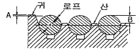
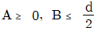
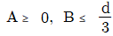
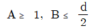
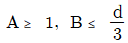
(정답률: 32%)
36. 비상정지장치에 관한 설명 중 옳지 않은 것은?
- 피트 하부를 사무실이나 통로로 사용할 경우 균형추측에도 설치한다.
- 정격속도가 45m/min 이하일 때는 즉시 작동형을 사용한다.
- 카의 속도가 정격속도의 140%이내에서 조속기에 의해 작동된다.
- 처음 동작시부터 카 정지시까지 정지력이 일정한 것을 FWC(프랙시블웨지크램프)형이라 한다.
(정답률: 52%)
37. 전원설비를 설계할 때 필요한 부등률과 관계가 가장 밀접한 것은?
- 도어 연동장치
- 서비스 층수
- 기계실 온도
- 기동 빈도
(정답률: 45%)
38. 엘리베이터 전동기의 동기속도가 1800rpm, 전부하속도가 1740rpm이면 슬립은 약 몇 [%]인가?
- 96.67
- 95.57
- 4.43
- 3.33
(정답률: 43%)
39. 다음 중 와이어로프에 의해 카가 움직이는 것은?
- 유압 간접식
- 유압 직접식
- 유압 팬더그래프식
- 에스컬레이터
(정답률: 57%)
40. 정격속도가 150m/min인 승객용 엘리베이터의 속도가 증가하여 비상정지장치가 작동하는 속도의 범위는?
- 195m/min 이하
- 210m/min 이하
- 225m/min 이하
- 240m/min 이하
(정답률: 42%)
3과목: 일반기계공학
41. 회전수 1500rpm 인 3줄 웜이 잇수 30개인 웜 휠(웜 기어)에 물려 돌고 있다면, 이때 웜 휠의 회전수는?
- 50rpm
- 150rpm
- 180rpm
- 280rpm
(정답률: 53%)
42. 주조형 목형(원형)을 실물치수보다 크게 만드는 이유로 다음 중 가장 중요한 것은?
- 수축 여유와 가공 여유를 고려하기 때문이다.
- 잔형을 덧붙임 하여야 하기 때문이다.
- 코어를 넣어야 하기 때문이다.
- 주형의 치수가 크기 때문이다.
(정답률: 66%)
43. 펌프의 전 효율(η)을 구하는 식은? (단, ηm : 기계효율, ηv : 체적효율, ηh: 수적효율이다.)
- η=ηmㆍηvㆍηh
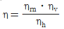
- η=ηm+ηv+ηh
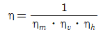
(정답률: 56%)
44. 선반작업에서 공작물의 지름을 D(mm), 1분간의 회전수를 N(rpm)이라고 할 때 절삭속도 V는 몇 m/min 인가?
- V = πDN
- V = πDN/1000
- V = πD/1000N
- V = πN/1000D
(정답률: 69%)
45. 왕복 펌프에서 공기실의 가장 주된 역할은?
- 밸브의 개폐를 쉽게 한다.
- 밸브가 닫혀있을 때 누설이 없게 한다.
- 송출되는 유량의 변동을 적게 한다.
- 피스톤(또는 플런저)의 운동을 원활하게 한다.
(정답률: 47%)
46. 열응력에 관한 설명으로 가장 적합한 것은?
- 열을 가해 온도가 올라갈 때 늘어나면서 생기는 내부응력
- 온도가 내려가면 재료가 수축하며 생기는 외부 응력
- 높은 온도에서 급냉할 때만 발생하는 잔류응력
- 온도 변화에 의한 신축이 방해되었기 때문에 생기는 응력
(정답률: 40%)
47. 베이링에 오일 실을 사용하는 가장 중요한 이유는?
- 접촉이 잘 되도록 하기 위하여
- 마찰면이 적고, 열발산을 위하여
- 유막이 끊기지 않도록 하기 위하여
- 기름이 새는 것과 먼지 등을 침입을 막기 위하여
(정답률: 70%)
48. 3000N-mm의 비틀림 모멘트가 작용하는 지름 10mm 환봉축의 최대 전단응력은 약 몇 N/mm2 인가?
- 13.42
- 15.28
- 17.59
- 21.28
(정답률: 32%)
49. 그림과 같은 단순 보의RA,RB 의 값으로 적당한 것은?
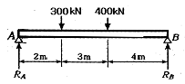
- RA=467.4KN,RB=232.6KN
- RA=432.3KN,RB=267.7KN
- RA=411.1KN,RB=288.9KN
- RA=396.8KN,RB=303.2KN
(정답률: 44%)
50. 엘리베이터 (elevator)의 로프와 같이 하중의 크기와 방향이 일정하게 되풀이 작용하는 하중은?
- 집중하중
- 분포하중
- 반복하중
- 충격하중
(정답률: 65%)
51. 다음 중 평벨트 전동과 비교했을 때 V벨트 전동의 특징이 아닌 것은?
- 속도비를 크게 할 수 있다.
- 벨트가 끊어 졌을 때 쉽게 접합 할 수 있다.
- 미끄럼이 적고 효율이 좋다
- 주행상태가 원활하고 정숙하다.
(정답률: 72%)
52. 아크 용접에서 언더 컷(under cut)은 다음 어느 조건에서 가장 많이 나타나는가?
- 고전압, 고용접속도
- 전류부족, 저 용접 속도
- 고 용접속도, 전류 과대
- 저 용접속도, 전류 과대
(정답률: 59%)
53. 다음 열처리의 담금질액 중 냉각 속도가 가장 빠른 것은?
- 소금물
- 공기
- 물
- 기름
(정답률: 52%)
54. 소성가공법에서 열간 가공의 특징이 아닌 것은?
- 가공 면이 아름답고 정밀한 형상의 가공 면을 얻는다.
- 재결정온도 이상으로 가열하므로 가공이 쉽다.
- 거친 가공이 적합하다.
- 표면이 가열되어 있어 산화로 인해 정밀 가공이 어렵다.
(정답률: 53%)
55. 연산 숫돌은 자동적으로 닳아 떨어져 커터의 바이트처럼 연삭하지 않아도 되는데 이러한 현상은 무엇이라 하는가?
- 자생작용
- 클레이징
- 투루밍
- 드레싱
(정답률: 55%)
56. 마그네슘 - 알루미늄계 합금이며 7% 이상의 알루미늄을 함유하여 인장강도, 연신율이 매우 큰 것은?
- 포금
- 실루민
- 다우메탈
- 두랄루민
(정답률: 30%)
57. 일명 미끄럼 키라고도 하며 회전 토크를 전달함과 동시에 보스가 축방향으로 이동할 수 있는 키는?
- 새들 키
- 평 키
- 페더 키
- 반달 키
(정답률: 53%)
58. 플라스틱계 복합재료로 섬유강화 플라스틱의 약어인 것은?
- FRM
- FRP
- FRC
- SAP
(정답률: 68%)
59. 다음 중 일반 구조용 압연강재의 특성 대한 설명으로 옳은 것은?
- 열간 압연으로 만들어진 강판, 강대, 평강, 형강, 봉강 등의 강재이다.
- P와 S가 비교적 많이 함유되어 있기 때문에 인성, 특히 저온 인성이 높다.
- 기계 가공성과 용접성이 뛰어나서 용접 구조용 압연강제와 혼용하여 사용할 수 있다.
- 고장력강으로 분류되며 인장강도는 대략 100MPa 이며 연성은 25%정도이다.
(정답률: 41%)
60. 압축 코일 스프링에서 유효 감김수만큼을 2배로 하면 축하중에 대하여 처짐은 몇 배가 되는가?
- 2
- 4
- 8
- 16
(정답률: 35%)
4과목: 전기제어공학
61. R-L 직렬회로에 100V의 교류 전압을 가했을 때 저항에 걸리는 전압이 80V이었다면 인덕턴스에 유기되는 전압은 몇 [V]인가?
- 20
- 40
- 60
- 80
(정답률: 42%)
62. 토크 T[N∙m]를 전기적 유추로 변환하면?
- 저항
- 전류
- 전하
- 전압
(정답률: 53%)
63. 워드 레어너드방식의 목적은?
- 정류 개선
- 속도제어
- 계자자속 조정
- 병렬운전
(정답률: 47%)
64. 농형 유도전동기의 기동법이 아닌 것은?
- 전전압기동법
- 기동보상기법
- Y-∆기동법
- 2차 저항법
(정답률: 54%)
65. 변압기의 정격용량은 2차 출력단자에서 얻어지는 어떤 전력으로 표시하는가?
- 피상전력
- 유효전력
- 무효전력
- 최대전력
(정답률: 45%)
66. R,L,C 직렬회로에서 직렬공진 조건으로 알맞은 것은?
- ωL=ωC
- ω2
- ω2LC=1
- ωL+ωC=1
(정답률: 59%)
67. 목표치가 미리 정해진 시간적 변화를 하는 경우 제어량을 그것에 추종시키기 위한 제어는?
- 정치제어
- 프로그래밍제어
- 추종제어
- 비율제어
(정답률: 36%)
68. 기계적 운동을 전기적 신호로 변환시켜 기계 또는 장치의 전기회로를 제어하는 검출스위치로 사용되는 것은?
- 절환스위치
- 광전스위치
- 리미트스위치
- 누름버튼스위치
(정답률: 47%)
69. 그림과 같은 회로에서 저항 R2에 흐르는 전류 I2[A]는?
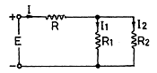
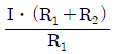
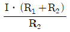
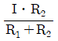
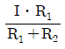
(정답률: 35%)
70. 그림과 같은 브리지회로에서 검류계 Ⓖ에 전류가 흐르지 않는다면 저항 r5[Ω]는? (단, 단위는 모두 [Ω]이다.)
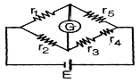
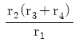
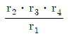
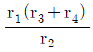
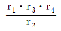
(정답률: 44%)
71. 자동조정에 속하지 않는 제어량은?
- 주파수
- 속도
- 전압
- 방위
(정답률: 64%)
72. 병렬 2값 신호를 보내는 4회선이 있을 때 조합신호로 최대 몇 개의 정보를 보낼 수 있는가?
- 2
- 4
- 8
- 16
(정답률: 44%)
73. 2대의 전력계를 사용하여 평행부하의 3상회로의 역률을 측정하려고 한다. 전력계의 지시가 각각 W1, W2라 할 때 이 회로의 역률은?
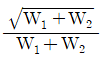
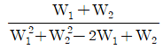
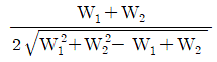
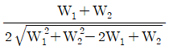
(정답률: 57%)
74. 어떤 제어계의 임펄스 응답이 일 때 계의 전달함수는?
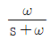
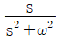
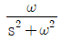
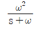
(정답률: 40%)
75. 폐회로 제어계에서 동작신호를 조작량으로 변환하며, 조절부와 조작부로 되어 있는 부분을 무엇이라 하는가?
- 주궤환요소
- 제어요소
- 기준입력요소
- 제어장치
(정답률: 62%)
76. R-L-C 병렬회로가 병렬 공진되었을 때 합성 임피던스의 크기와 합성 전류의 크기는?(오류 신고가 접수된 문제입니다. 반드시 정답과 해설을 확인하시기 바랍니다.)
- 임피던스는 최대, 전류는 최소가 된다.
- 임피던스는 최소, 전류는 최대가 된다.
- 임피던스와 전류 모두 최대가 된다.
- 임피던스와 전류 모두 최소가 된다.
(정답률: 39%)
77. 그림과 같은 피드백회로의 종합 전달함수 C/R는?
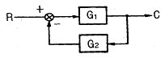
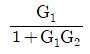
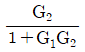
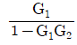
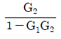
(정답률: 67%)
78. 100mH의 자기 인덕턴스를 가진 코일에 10A의 전류를 통할 때 축척되는 에너지는 몇 [J]인가?
- 1
- 5
- 50
- 1000
(정답률: 35%)
79. PI동작의 전달함수는?
- KP
- KPsT
- KP(1+sT)
- KP(1+(1/sT))
(정답률: 56%)
80. 디지털 제어시스템에서 다루는 기본적인 입력 이산신호의 종류가 아닌 것은?
- 단위 스텝신호
- 단위 비례적분신호
- 단위 교번신호
- 단위 램프신호
(정답률: 40%)